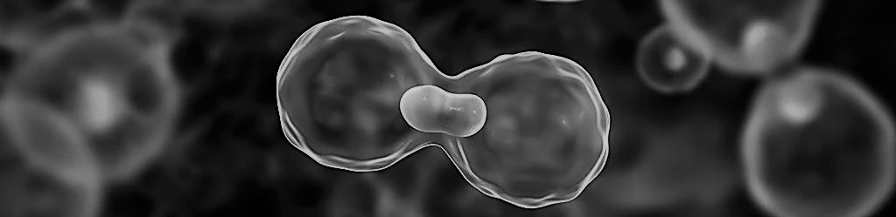
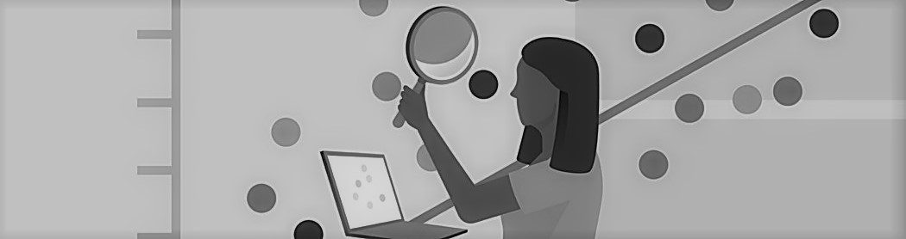
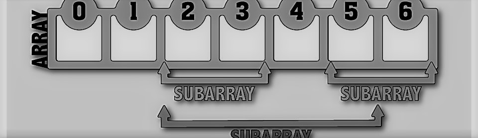

The problem statement points out a requirement for an Image Processing and Deep Learning solution to help Doctors and surgeons to identify the associated allergies from captured images of skin, predict the probability of skin cancer, and suggest remedies to prevent further damage.
My team at University presents a solution to the above problem in the form of two independent Convolutional Neural Network (CNN) models, for Classification of Types of Skin Lesions and associated allergies, and for the Prediction of Probability of Skin cancer and its type, respectively. A Convolutional Neural Network (ConvNet/CNN) is a Deep Learning algorithm which can take in an input image, assign importance (learnable weights and biases) to various aspects/objects in the image and be able to differentiate one from the other. The pre-processing required in a ConvNet is much lower as compared to other classification algorithms. While in primitive methods filters are hand-engineered, with enough training, ConvNets have the ability to learn these filters/characteristics.
The Model Architecture used for Predicting probability of Skin Cancer was ResNet50(Residual Network with 50 Layers) + 3 Convolutional Layers. ResNet50 eliminates the Vanishing Gradient problem.
In general, in a deep convolutional neural network, several layers are stacked and are trained to the task at hand. The network learns several low/mid/high level features at the end of its layers. In residual learning, instead of trying to learn some features, we try to learn some residual. Residual can be simply understood as subtraction of feature learned from input of that layer. ResNet does this using shortcut connections or skip connections (directly connecting input of nth layer to some (n+x)th layer). It has proved that training this form of networks resolves the problem of degrading accuracy.
The model was trained using Skin Cancer ISIC Dataset, which is a large collection of 3297 images labelled as Benign or Malignant cancer.
Skin Cancer ISIC Dataset
The model architecture used is DenseNet169 (Densely Connected Convolutional Network) + 6 Convolutional layers.
CNN architecture is used for this prediction model as well. We found that while ResNet50 gave excellent results with predicting if the cancer is Benign or Malignant(that is, when the model had 2 classes to predict from), it didn’t work so well when it had 7 classes to classify from(i.e. the above listed 7 types of Skin Lesions). Other neural network architectures underperformed as well, as the number of classes had increased. After experimenting with more types of Residual Network architectures(like ResNet101, ResNet152), other convolutional neural network architectures like VGG16, VGG19, MobileNet, InceptionV3, and DenseNet121, we found that the following model gave the best accuracy: DenseNet169 + 6 convolutional layers.
The model was trained using HAM10000 Dataset, which is A large collection of multi-source dermatoscopic images of common pigmented skin lesions, containing 10000 images with 7 class types.
HAM10000 Dataset

Linear Regression is an algorithm used for calculated prediction of continuous and labelled data.
The idea is to fit a Regression line to a plot of \(y\) vs \(x\) where \(y =\) dependant variable (Target value).
Regression line passes through \(\overline{x}\), \(\overline{y}\)
Assuming \(y = mx + c\) for regression line,
Calculate \(m\) using \({\sum(y - \overline{y})(x - \overline{x})} \over {\sum(x - \overline{x})}\)
Calculate \(c\) from \(y = mx + c\) using mean values of \(x\) and \(y\) and value of \(m\). [For example, \(y = 0.4 x + 2\)]
Mean Square Error refers to the difference between the actual values and predicted values.
Mean Square Error is calculated for different values of m and the m with least error is selected. The equation obtained describes the line of best fit.
Goodness of Fit is measured using the R Square Rule.
The R Square Rule is a Statistical measure of the closeness of data to the fitted Regression line, also called the Coefficient of Determination.
\( {\sum (y_{p} - \overline{y})^2} \over {\sum (y - \overline{y})^2} \)
Larger Values of \( R^2 \) \( \Rightarrow \)Larger Values of \( R^2 \) imply that the values are close to the Regression line.
Smaller Values of \( R^2 \) \( \Rightarrow \)Smaller Values of \( R^2 \) imply that the values are far away compared to the Regression line. From smaller values of \( R^2 \), it can also concluded that too many outliers are present.
Note: In certain cases, such as prediction of Human Behaviour, small values of \( R^2 \) are expected.

Kadane's algorithm can be used to find the maximum sub-array sum for a given array.
For Example, \( \{-1, 2, 4, -3, 5, 2, -5, 2\} \)
The sub-array having maximum sum is the following:
\( \{ 2, 4, -3, 5, 2 \} \) with \( sum = 10 \)
The idea around the algorithm, is to calculate, for each position \(i\), the maximum sum of a sub-array that ends in that position. Having done this, the subsuquent problem becomes the maximum of those sums.
For this sub-problem at position \(i\), there are two possibilities:
Kadane's algorithm is linear in nature requiring a single traversal of the given array. The Time compexity of Kadane's algorithm is O(N).
int maxSubArraySum(int arr[], int n) {
int sum = 0, best = 0;
for (int i=0; in; i++) {
sum = max(arr[i], sum + arr[i]); //1
best = max(best, sum); //2
}
return best;
} \(1 \Rightarrow \) Calculates maximum sub-array sum of the sub-array ending at \(i\).
\(2 \Rightarrow \) Calculates the best possible sum of all sub-array sums.
For Example, take \( \{ -1, 2, 4, -3, 5, 2, -5, 2 \}\)
| # | i | sum | best |
|---|---|---|---|
| 1 | 0 | -1 | 0 |
| 2 | 1 | 2 | 2 |
| 3 | 2 | 6 | 6 |
| 4 | 3 | 3 | 6 |
| 5 | 4 | 8 | 8 |
| 6 | 5 | 10 | 10 |
| 7 | 6 | 5 | 10 |
| 8 | 7 | 7 | 10 |
Therefore, the Largest Sub-array Sum is 10.